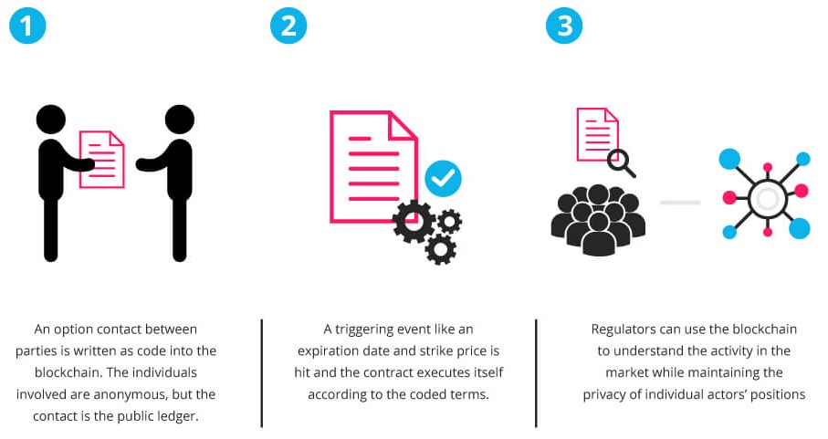

Is Ethereum similar to Bitcoin? Well, sort of, but not really.
Although commonly associated with Bitcoin, blockchain technology has many other applications that go way beyond digital currencies. In fact, Bitcoin is only one of several hundred applications that use blockchain technology today.
Until relatively recently, building blockchain applications has required a complex background in coding, cryptography, mathematics as well as significant resources. But times have changed. Previously unimagined applications, from electronic voting & digitally recorded property assets to regulatory compliance & trading are now actively being developed and deployed faster than ever before. By providing developers with the tools to build decentralized applications, Ethereum is making all of this possible.
At its simplest, Ethereum is an open software platform based on blockchain technology that enables developers to build and deploy decentralized applications. Like Bitcoin, Ethereum is a distributed public blockchain network. Although there are some significant technical differences between the two, the most important distinction to note is that Bitcoin and Ethereum differ substantially in purpose and capability. Bitcoin offers one particular application of blockchain technology, a peer to peer electronic cash system that enables online Bitcoin payments. While the Bitcoin blockchain is used to track ownership of digital currency (bitcoins), the Ethereum blockchain focuses on running the programming code of any decentralized application.
In the Ethereum blockchain, instead of mining for bitcoin, miners work to earn Ether, a type of crypto token that fuels the network. Beyond a tradeable cryptocurrency, Ether is also used by application developers to pay for transaction fees and services on the Ethereum network.
The core element, which makes Ethereum unique is the Smart Contract. Smart contract is just a phrase used to describe computer code that can facilitate the exchange of money, content, property, shares, or anything of value. When running on the blockchain a smart contract becomes like a self-operating computer program that automatically executes when specific conditions are met. Because smart contracts run on the blockchain, they run exactly as programmed without any possibility of censorship, downtime, fraud or third party interference.

Like Bitcoin, Ethereum is a distributed public blockchain network. Although there are some significant technical differences between the two, the most important distinction to note is that Bitcoin and Ethereum differ substantially in purpose and capability. Bitcoin offers one particular application of blockchain technology, a peer to peer electronic cash system that enables online Bitcoin payments. While the Bitcoin blockchain is used to track ownership of digital currency (bitcoins), the Ethereum blockchain focuses on running the programming code of any decentralized application.
In the Ethereum blockchain, instead of mining for bitcoin, miners work to earn Ether, a type of crypto token that fuels the network. Beyond a tradeable cryptocurrency, Ether is also used by application developers to pay for transaction fees and services on the Ethereum network.
What makes Ethereum unique are Smart Contracts. Smart contract is just a phrase used to describe computer code that can facilitate the exchange of money, content, property, shares, or anything of value. When running on the blockchain a smart contract becomes like a self-operating computer program that automatically executes when specific conditions are met. Because smart contracts run on the blockchain, they run exactly as programmed without any possibility of censorship, downtime, fraud or third party interference.
While all blockchains have the ability to process code, most are severely limited. Ethereum is different. Rather than giving a set of limited operations, Ethereum allows developers to create whatever operations they want. This means developers can build thousands of different applications that go way beyond anything we have seen before.
Before the creation of Ethereum, blockchain applications were designed to do a very limited set of operations. Bitcoin and other cryptocurrencies, for example, were developed exclusively to operate as peer-to-peer digital currencies. So developers faced a problem. Either expand the set of functions offered by Bitcoin and other types of applications, which is very complicated and time-consuming, or develop a new blockchain application and an entirely new platform as well. Recognizing this predicament, Ethereum’s creator, Vitalik Buterin developed a new approach.
Ethereum’s core innovation, the Ethereum Virtual Machine (EVM) is a Turing complete software that runs on the Ethereum network. It enables anyone to run any program, regardless of the programming language given enough time and memory. The Ethereum Virtual Machine makes the process of creating blockchain applications much easier and efficient than ever before. Instead of having to build an entirely original blockchain for each new application, Ethereum enables the development of potentially thousands of different applications all on one platform.
What can Ethereum be used for?
Ethereum enables developers to build and deploy decentralized applications. A decentralized application or Dapp serve some particular purpose to its users. Bitcoin, for example, is a Dapp that provides its users with a peer to peer electronic cash system that enables online Bitcoin payments. Because decentralized applications are made up of code that runs on a blockchain network, they are not controlled by any individual or central entity.
Any services that are centralized can be decentralized using Ethereum. Think about all the intermediary services that exist across hundreds of different industries. From obvious services like loans provided by banks to intermediary services rarely thought about by most people like title registries, voting systems, regulatory compliance and much more.
Ethereum can also be used to build Decentralized Autonomous Organizations (DAO). A DAO is fully autonomous, decentralized organization with no single leader. DAO’s are run by programming code, on a collection of smart contracts written on the Ethereum blockchain. The code is designed to replace the rules and structure of a traditional organization, eliminating the need for people and centralized control. A DAO is owned by everyone who purchases tokens, but instead of each token equating to equity shares & ownership, tokens act as contributions that give people voting rights.
What are the benefits of Ethereum decentralized Platform?
Because decentralized applications run on the blockchain, they benefit from all of its properties.
- Immutability – A third party cannot make any changes to data.
- Corruption & tamper proof – apps are based on a network formed around the principle of consensus, making censorship impossible.
- Secure – With no central point of failure and secured using cryptography, applications are well protected against hacking attacks and fraudulent activities.
- Zero downtime – Apps never go down and can never be switched off.
What’s the downside of decentralized applications?
Despite bringing a number of benefits, decentralized applications aren’t faultless. Because smart contract code is written by humans, smart contracts are only as good as the people who write them. Code bugs or oversights can lead to unintended adverse actions being taken. If a mistake in the code gets exploited, there is no efficient way in which an attack or exploitation can be stopped other than obtaining a network consensus and rewriting the underlying code. This goes against the essence of the blockchain which is meant to be immutable. Also, any action taken by a central party raises serious questions about the decentralized nature of an application.